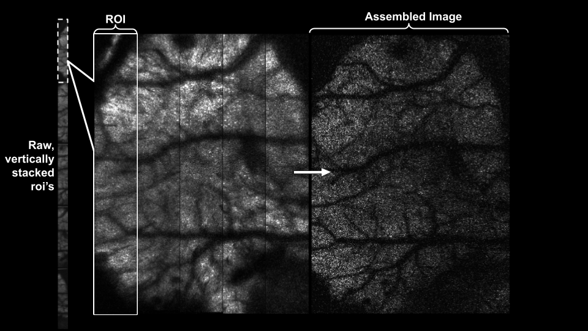
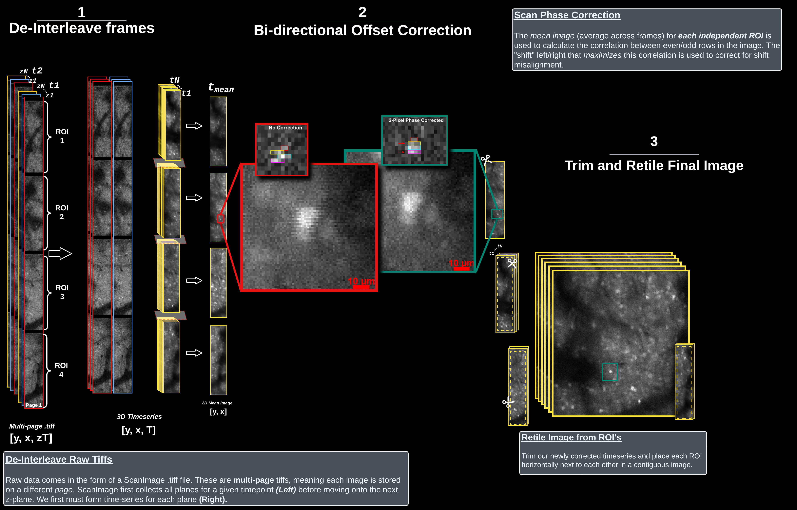

Image Assembly#
TLDR
If all you want is code to get started, this will
import mbo_utilities as mbo
scan = mbo.read_scan("path/to/data/*.tiff") # or list of full filepaths
mbo.save_as(scan, "path/to/assembled_data", ext=".tiff") # tiff or bin
A progress bar will track the current file progress.#
Overview#
This section covers the steps to convert raw scanimage-tiff files into assembled, planar timeseries.

Overview of pre-processing steps that convert the raw scanimage tiffs into planar timeseries. Starting with a raw, multi-page ScanImage Tiff, frames are deinterleaved, optionally pre-processed to eliminate scan-phase artifacts, and fused to create an assembled timeseries.#
# imports
from pathlib import Path
import numpy as np
import fastplotlib as fpl
import mbo_utilities as mbo
Input data: Path to your raw .tiff file(s)#
One session per folder
Make sure your data_path contains only .tiff files for this imaging session.
If there are other .tiff files, such as from another session or a processed file for this session, those files will be included in the scan and lead to errors.
Initialize a scanreader object#
Pass a list of files, or a wildcard “/path/to/files/*” to mbo.read_scan().
Tip
mbo_utilities.get_files() is useful to easily get all files of the same filetype
files = mbo.get_files("D://demo//animal_01//raw", 'tif')
files[:2]
['/home/flynn/lbm_data/raw/mk301_03_01_2025_2roi_17p07hz_224x448px_2umpx_180mw_green_00004.tif',
'/home/flynn/lbm_data/raw/mk301_03_01_2025_2roi_17p07hz_224x448px_2umpx_180mw_green_00002.tif']
scan = mbo.read_scan(files)
# T, Z, X, Y
scan.shape
print(f'Planes: {scan.num_channels}')
print(f'Frames: {scan.num_frames}')
print(f'ROIs: {scan.num_rois}')
print(f'frame-rate: {scan.fps}')
Accessing data in the scan#
The scan can be indexed like a numpy array, data will be loaded lazily as only the data you access here is loaded in memory.
# load the first 6 frames (0 to 5), the first z-plane, and all X/Y pixels
array = scan[:5, 0, :, :]
print(f'[T, X, Y]: {array.shape}')
# load a z stack, with a single frame for each Z
array = scan[0, :, :, :]
print(f'[Z, X, Y]: {array.shape}')
A note on performance
When you initialize a scan with read_scan, tifffile is going to iterate through every page in your tiff to “count” how many pages there are.
. Only a single page of data is held in memory, and using that information we can lazily load the scan (this is what the scanreader does).
For a single 35 Gb file, this process takes ~10 seconds. For 216 files totaling 231 GB, ~ 2 minutes.
This only occurs once, and is cached by your operating system. So the next time you read the same scan, a 35GB file will be nearly instant, and a series of 216 files ~8 seconds.
import matplotlib.pyplot as plt
%matplotlib inline
plt.imshow(np.mean(scan[:100, 6, :, :], axis=0))
plt.title('Mean Image for first 100 frames')
plt.show()
This will display a widget allowing you to scroll in time and in z.
image_widget = mbo.run_gui(scan)
image_widget.show()
image_widget.close()
Save assembled files#
The currently supported file extensions are .tiff.
save_path = Path("/home/flynn/lbm_data/mk301/assembled")
save_path.mkdir(exist_ok=True)
mbo.save_as(
scan,
save_path,
planes=[0, 6, 13], # for 14 z-planes, first, middle, last
overwrite=True,
ext = '.tiff',
trim_edge=[2, 2, 2, 2], # post-assembly pixels to trim [left, right, top, bottom]
fix_phase=True # fix bi-directional scan phase offset
)
Vizualize data with fastplotlib#
To get a rough idea of the quality of your extracted timeseries, we can create a fastplotlib visualization to preview traces of individual pixels.
Here, we simply click on any pixel in the movie, and we get a 2D trace (or “temporal component” as used in this field) of the pixel through the course of the movie:
More advanced visualizations can be easily created, i.e. adding a baseline subtracted element to the trace, or passing the trace through a frequency filter.
import tifffile
from ipywidgets import VBox
img = tifffile.memmap("path/to/assembled/plane_07.tiff")
iw_movie = fpl.ImageWidget(img, cmap="viridis")
tfig = fpl.Figure()
raw_trace = tfig[0, 0].add_line(np.zeros(img.shape[0]))
@iw_movie.managed_graphics[0].add_event_handler("click")
def pixel_clicked(ev):
col, row = ev.pick_info["index"]
raw_trace.data[:, 1] = iw_movie.data[0][:, row, col]
tfig[0, 0].auto_scale(maintain_aspect=False)
VBox([iw_movie.show(), tfig.show()])
Under the hood#
